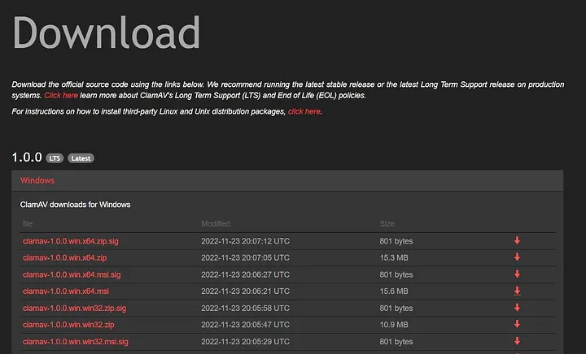

The Mydoom virus, observed in 2004, caused an estimated $38 billion in damage, making it one of the worst computer virus outbreaks in history. It was a significant disruption in the computing world.
The Sobig virus, which emerged in 2003, is another notorious worm. It ranks just behind Mydoom in terms of its scope and impact.
The Klez worm was known for its minimal impact but was still a notable threat in its time, causing problems despite being relatively easy to remove.
The ILOVEYOU virus from the year 2000 propagated through a bogus “love letter” email, causing widespread damage and disruption.
The Code Red worm, first observed in 2001, infected nearly a million hosts. It displayed the message “Hacked by Chinese!” on infected web pages and operated entirely in the memory of each machine.
The SQL Slammer worm, noted for its massive impact, cost an estimated $750 million in 2003. It exploited vulnerabilities to launch a DDoS attack, affecting banks and slowing internet traffic significantly.
The CryptoLocker ransomware, active in 2013, encrypted files on over 250,000 machines and demanded ransom payments. Its total cost, estimated at $665 million, made it one of the more financially damaging ransomware attacks.
Written by Sven Jaschan, a 17-year-old German student, the Sasser worm caused widespread disruption and was associated with significant financial damage, estimated at $500 million.
Mimail was a worm that harvested data to launch DDoS attacks but was relatively easy to remove compared to other threats.
Yaha, another worm, had several variants and was speculated to be part of a cyber conflict between Pakistan and India. Its financial impact is estimated but not reliably quantified.
The Storm Worm, appearing in 2007, used weather-themed emails to spread itself and infect millions of computers.
Explorezip spread through fake emails and affected thousands of local networks, causing disruptions and data loss.
The Melissa virus, the most dangerous in 1999, spread through NSFW-looking emails, with cleanup and repair costs estimated at $80 million.
Sircam, from 2001, used counterfeit emails with a deceptive subject line to spread and infect systems.
The Flashback virus targeted Macs in 2012, infecting over 600,000 devices, including those at Apple’s headquarters. It marked a significant shift in malware affecting macOS.
The Conficker virus, active in 2009, continues to affect legacy systems. It has the potential to cause significant damage if it activates.
Stuxnet is known for its sophisticated attack on Iranian nuclear centrifuges, sending damaging instructions to disrupt their operation.
Description: Judy was a widespread malware campaign affecting over 36 million Android devices. Disguised as a legitimate app, it was found in more than 40 apps in the Google Play Store. Once installed, it generated fraudulent clicks on ads, generating revenue for the attackers.
Impact: The malware could bypass Google Play’s security checks and caused significant financial loss due to its fraudulent activities.
Description: HummingBad was a type of malware that affected around 10 million Android devices. It was distributed through third-party app stores and malicious websites. The malware rooted devices, installed unauthorized apps, and generated fraudulent ad clicks.
Impact: The malware earned its creators around $300,000 per month and compromised user data by installing additional malicious apps.
Description: Named after the character from the Matrix movies, Agent Smith infected about 25 million devices. It replaced legitimate apps with malicious versions without users’ knowledge. Initially spread through third-party app stores, it targeted popular apps like WhatsApp.
Impact: The malware showed fraudulent ads and could potentially steal sensitive information. Its stealthy nature made it particularly dangerous.
Description: Triada was a sophisticated Trojan that could embed itself deeply into the Android OS, allowing it to modify system files and intercept communications. It was initially spread through pre-installed apps on low-cost devices.
Impact: The Trojan was capable of executing financial transactions without user consent, leading to unauthorized purchases and data theft.
Description: Although primarily affecting iOS, XcodeGhost also targeted Android devices. It involved a compromised version of Apple’s Xcode development tool, which developers unknowingly used to create infected apps.
Impact: The malware harvested data from infected devices and sent it to a remote server. It affected popular apps, leading to widespread concern about app security.
Description: BankBot was a banking Trojan that targeted financial apps on Android devices. It used phishing overlays to trick users into entering their banking credentials, which were then sent to the attackers.
Impact: The malware stole sensitive financial information, leading to unauthorized transactions and financial losses for victims.
Description: Joker was a malware found in various apps on the Google Play Store. It subscribed users to premium services without their consent, leading to unexpected charges on their bills.
Impact: The malware affected millions of users and caused significant financial harm by subscribing them to services without their knowledge.
Description: Faketoken was a banking Trojan that targeted users through SMS phishing campaigns. It disguised itself as a legitimate app and intercepted SMS messages, including two-factor authentication codes.
Impact: The malware enabled attackers to gain access to victims’ bank accounts and perform unauthorized transactions.
Description: Skygofree was a sophisticated spyware that could perform a variety of malicious activities, including recording audio, intercepting text messages, and tracking device location. It was spread through malicious websites mimicking legitimate ones.
Impact: The spyware was used for targeted surveillance and data theft, compromising the privacy and security of affected users.
download the latest stable version of ClamAV from the below link. https://www.clamav.net/downloads 
downloaded the .msi version of the installation package, double-click on it and follow the instructions to install it.
Once you have installed ClamAV, navigate to the installation folder and find for conf_examples folder. You can see the clamd.conf.sample
file and freshclam.conf.sample config file inside the conf_examples folder.
Then copy those two files to the installation directory. (eg: C:\ClamAV)
> Rename clamd.conf.sample to clamd.conf
> Rename freshclam.conf.sample to freshclam.conf
Notepad.exe clamd.conf#LogFile "C:\Program Files\ClamAV\clamd.log""C:\Program Files\ClamAV\freshclam.log""C:\Program Files\ClamAV\database"Open the Windows Command Prompt in Administrator Mode and navigate to the installation directory (eg: C:\ClamAV). Run the following command to install as a service.
clamd.exe --installDownload Latest Database from clamAV database This Link and add to database Folder
Scan D:\ Directory with clamAV
"C:\Program Files\ClamAV\clamscan.exe" --remove --infected --recursive --verbose D:\